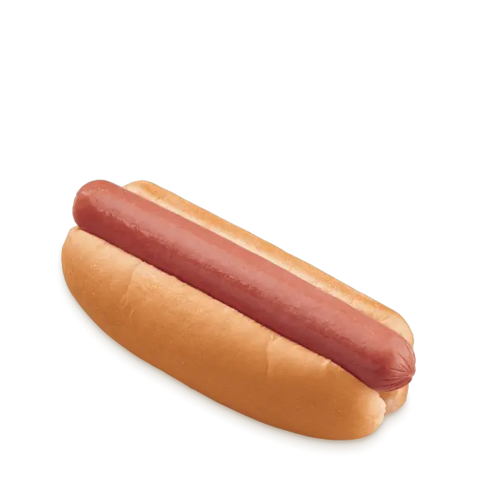

Hotdog Recipe

A delicous and classic NYC fan favourite. Let's make some extra yummy hotdogs.
- 4 large frankfurters
- 4 hot dog buns, split
- sauerkraut, to serve
For the caramelised onions
- 1 tbsp vegetable oil
- 2 large onions, halved and sliced
- 1/4 tsp ground cinnamon
- large pinch of chilli powder
- 2 tbsp honey
- 2 tsp American-style mustard, plus extra to serve
- 2 tsp ketchup, plus extra to serve
- 2 tsp tomato puree
- 2 tsp cider or white wine vinegar
- 1 tsp Worcestershire sauce
3 easy steps to make your hotdog
- First, make the onions. Heat the oil in a frying pan over a low-medium heat and cook the onions for 10-12 mins until golden and slightly charred in spots.
- Stir in the cinnamon, chilli powder, honey, mustard, ketchup, tomato purée, vinegar, Worcestershire sauce, 2-3 tbsp water and a pinch of salt. Simmer for 1-2 mins until the onions are saucy, adding a splash more water if they seem dry. Taste and add a little more chilli powder, mustard or a pinch of sugar, if you like. Keep the onions warm if you’re serving straightaway or cool and chill. Will keep in an airtight container in the fridge for up to five days. Reheat over a low heat before serving, adding a splash of water to loosen as needed.
- Light a barbecue and wait until the coals are ashen, set a gas barbecue to medium or heat a griddle pan over a medium heat. Alternatively, bring a pan of water to a simmer. Cook the frankfurters for 15 mins on the barbecue or in a griddle pan until charred, or for 8 mins in a pan of simmering water. If using a barbecue, warm the buns over the coals, if you like. Spoon a little sauerkraut into each bun, top with a frankfurter and spoon over the onions. Drizzle over some extra mustard and ketchup.